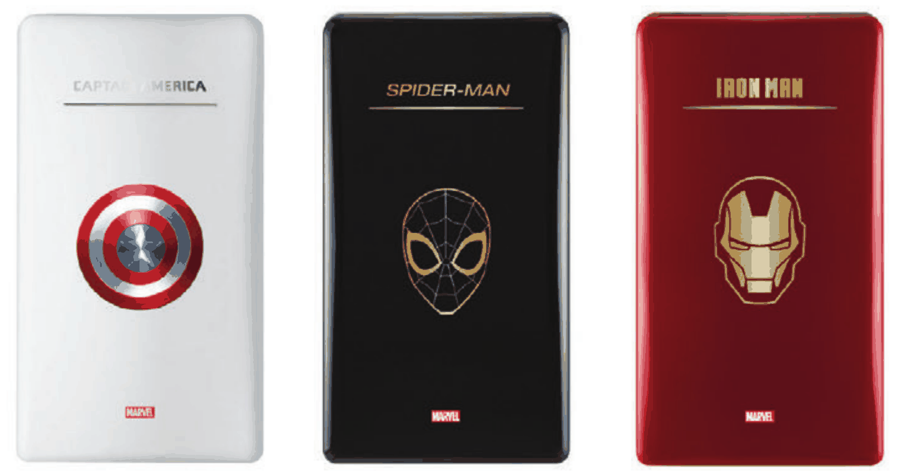

간판 없는 브랜드가 남의 간판을 빌리는 법
가전 매장에서 냉장고는 문을 열어 보기 전에 브랜드 이름으로 먼저 평가받는다. 삼성과 LG 사이에 낀 동부대우전자의 냉장고가 딱 그랬다. 기능을 아무리 덧붙여도 브랜드 간판의 격차는 좀처럼 좁혀지지 않았다.
간판의 무게를 키우려면 오랜 시간이 걸리니, 결국 남의 간판을 빌려 오자는 생각이 나왔다. 물론 빌리는 데도 요령이 필요하다는 건 하면서 알았다. 당시 나는 동부대우전자 디자인센터의 디자이너였다.
국내 3위 가전사였던 당시의 동부대우전자가 새 금형을 파서 외형으로 차별화하기엔 비용도 시간도 너무 컸다. 그 대신 나온 것이 캐릭터 라이선스 제품이었다.
디즈니 고객센터
처음부터 정식 라이선스를 생각한 건 아니었다. 정식 라이선스는 어려울 거라고 다들 지레 겁을 먹었고, 비슷한 인상으로 장식해 보자는 우스갯소리가 오갔다. 1차 시안만 만들어 본 뒤, 나는 '정식으로 컨택해 보겠다'고 선언하고 바로 움직였다. 어설프게 흉내 냈다가는 빌린 간판이 오히려 우리 브랜드를 값싸 보이게 만들 것 같았다. 마땅한 연결고리가 없어 무작정 디즈니 고객센터로 전화해 담당자를 배정받았고, 월트디즈니컴퍼니코리아(이하 디즈니코리아)를 찾아가 사업 계획을 설명하며 프로젝트를 열었다. 마침 마블 영화가 한창 흥행하던 때였다.
문 한 짝
기존 124리터 소형 냉장고의 형상은 손대지 않고 오직 문 표면 하나만 바꿨다. 그 표면에 우리 간판 대신 마블의 간판을 올린 것이다. 디즈니코리아와의 제휴를 통해 캐릭터마다 1,500대씩 한정판을 만들었다.
처음에는 아이언맨은 빨강, 캡틴 아메리카는 파랑 도어로 기획했다. 하지만 기존 라인업을 최대한 활용해야 한다는 제약 때문에 파랑 도색은 포기하고, 기존의 하양 제품으로 타협했다.
디자인센터 TF에서 여러 디자이너가 표면 그래픽 시안을 냈고, 다행히 내 시안이 최종 선정됐다. 디즈니코리아와의 협의를 이끌고 프로젝트 일정을 챙기느라 패키지까지 손댈 여력은 없었고, 패키지 디자인은 같은 팀 선배들이 맡아 주었다.

방에 두는 냉장고
타깃은 일반적인 가전 구매 고객이 아니었다. 흔히 '맨케이브'라 부르는 자신만의 공간을 꾸미는 35~45세 남성, 즉 키덜트였다.
이 타깃은 디자인센터 TF의 선배가 짚어 냈고, 나는 그에 맞춰 방에 세워 두는 소장품처럼 보이도록 표면 그래픽을 설계했다.
한정판다운 가치는 디테일에서 보여야 했다. 문을 열면 바로 보이는 자리에 손가락만 한 금속 플레이트를 달고 냉장고마다 고유 번호를 새겼다. 아이디어는 다른 선배가 냈지만 플레이트 디자인과 세부 실무는 내가 맡았다. 가격은 77만 7천 원이었다.
미국을 보고 만들었는데, 반응은 한국에서 왔다
처음에는 마블의 본고장인 미국 시장을 겨냥해 기획했다. 기획 단계에서 미국 법인을 맡고 있던 임원을 인터뷰했는데, 그는 아이디어를 하나 더 보탰다. 출신 대학에 대한 자부심이 강한 미국에서는 마블뿐 아니라 대학별 에디션도 통할 것이라는 이야기였다. 대학 에디션까지는 가지 못했지만, 빌릴 간판이 시장마다 다르다는 걸 확인한 대화였다.
그런데 정작 반응이 더 좋았던 곳은 국내 영업본부였다. 그래서 국내 가전 양판점 3사인 롯데하이마트, 전자랜드, 일렉트로마트를 중심으로 출시하게 됐다.
하이마트는 이 콘셉트를 마음에 들어 하며 자사 전용 제품을 요청했다. 처음 계획한 캡틴 아메리카와 아이언맨에 더해, 하이마트 전용으로 스파이더맨 라인을 새로 만들었다.
빌린 간판에는 남의 규칙이 따라온다
그래픽 하나를 쓰더라도 디즈니코리아의 브랜드 가이드라인 승인을 거쳐야 했다. 캐릭터를 어떻게 쓸지는 그 가이드라인이 정했다.
문 표면 양산은 더 까다로웠다. 한국도자기와 협업해 도자기 전사 기법을 들여왔는데, 한국도자기 직원이 직접 작업 현장에 나와 방법을 알려 주고 전사 필름도 만들어 주었다. 다만 원래 작은 제품에 쓰던 방식이라 면적이 넓은 냉장고 도어에는 잘 맞지 않아, 양산 공정을 잡기까지 시행착오를 여러 번 겪었다.
하지만 가장 어려운 건 사내 조율이었다. 실무 PM으로서 상품기획, 제조공장, 국내마케팅, 국내영업, 디자인까지 5개 유관 부서의 일정을 맞춰야 했다. 야근은 물론이고 수시로 회의를 소집하며 담당 부서를 찾아갔고, 회의 중에 선배들에게 일정을 독촉하기도 했다.
그래도 놓친 기회가 있다. 디즈니코리아 담당자가 마블 영화 개봉에 맞춘 영화관 팝업 전시뿐 아니라 케이블TV 광고까지 제안해 주었지만, 사내 의견 조율이 늘어지는 바람에 둘 다 무산됐다.
출시 두 달, 8억 원
출시는 2017년 7월이었다. 상품기획 부서가 집계한 출시 2개월 매출은 8억 원이었고, 3개국으로 수출도 됐다.
가전 업계에서는 작은 숫자지만, 금형 한 번 새로 파지 않은 한정판 소형 냉장고 하나가 낸 결과다. 형상을 유지해 비용을 아낀 대가로 디자인상 심사에는 올라가지 못했다. 차별화가 표면에만 있었기 때문이다.